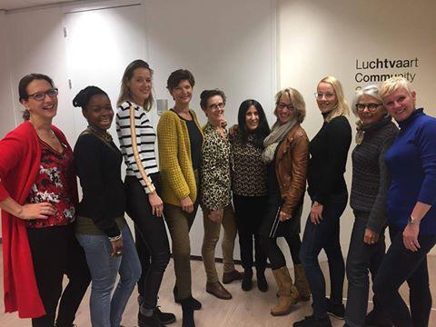

100 procent geslaagden voor het examen Spaans van de KLM
Het cabinepersoneel van de KLM moet examen doen in Engels en in een andere Europese taal (bijv. Spaans) als zij purser willen worden. Maar ook voor eigen ontwikkeling kunnen zij examen doen. KLM vergoedt de lessen mits zij slagen voor het examen. Het examen heeft als doel te onderzoeken in hoeverre cabinepersoneel een bepaalde taal op een voldoende niveau beheerst. Dit niveau, dat is bepaald door KLM, komt overeen met het taalniveau "onafhankelijk gebruiker (B2)" volgens het Europees referentiekader. En wordt afgenomen door een onafhankelijk taleninstituut (Elycio Talen). De docente Gemimah Ribbers bereidt al jaren mensen voor op het taalexamen Spaans zowel bij Buena Comunicación als bij de Luchtvaart Community Schiphol en zij heeft tot nu toe een slagingspercentage van 100% voor dit examen. Deze speciale trainingen zijn al jaren succesvol. Dit blijkt uit de recensies van deelnemers:

“Gemimah, wat had ik zonder jou gemoeten? Ik ben je eeuwig dankbaar dat ik onder jouw vleugels m’n examen heb gehaald.
Je hebt me zo ontzettend goed geholpen, niks aan de toeval overgelaten, alles nauwkeurig uitgewerkt, met de juiste timing, de juiste support.
Jouw manier van lesgeven is uiterst bijzonder, wat je zegt is duidelijk en blijvend.
Ik kan echt iedereen Gemimah aanraden wanneer je er over twijfelt om Spaans te gaan leren!!!”
(Josje van der Luijt)
“Ter voorbereiding van het taalexamen dat ik voor KLM wilde halen heb ik privé lessen bij Gemimah gevolgd. Ze heeft heel snel mijn niveau bepaald en haar lessen op mij aangepast. Daarnaast heeft ze heel snek gezien aan welke onderdelen in de Spaanse taal ik meer aandacht aan moest besteden en heeft hierbij enorm geholpen! Ook heeft ze goed geholpen met de juiste articulatie en uitspraak! Ze is een bevlogen lerares die passie heeft voor haar vak en met veel humor les geeft! Ik kan haar aan iedereen aanbevelen!”
(Talina Trum)
“Ik heb Spaanse les gehad bij Gemimah ter voorbereiding op mijn taalexamen. Bij Gemimah heb ik eindelijk de grammatica goed geleerd, dat was na al die jaren nog steeds een zwak punt. Ik zat erg op tegen de lessen omdat ik weinig concentratie heb maar bij Gemimah koste het me geen moeite en leert ze je het op zo’n leuke en originele manier. Ik hoop snel weer verder te gaan leren bij je!”
(Rianne Broers)
“Ik heb spijt dat ik niet jaren eerder Spaanse lessen ben gaan volgen bij Gemimah. Door haar enthousiasme, passie voor de taal, haar geweldige humor en originele wijze van lesgeven, heeft ze ervoor gezorgd dat ik ook van de Spaanse taal ben gaan houden en ben ik dankbaar dat ik het bijna dagelijks in mijn werk kan spreken. Gemimah, bedankt voor je mooie lessen en het vertrouwen in mij!”
(Annemieke Van Aalst)
“Leuke training. Aan iedereen aan te raden. Erg motiverend en perfect voor de Luchtvaart”
(Sharina el Gharib))
“Een hele leerzame cursus met een uitstekende docente die de stof goed uitlegt”
(Lorena van Hooff)
“Gemimah geeft duidelijk en zeer goed les. De dagen zijn afwisselend en nooit saai. Ik heb de cursus met veel plezier doorlopen. De docente weet je te motiveren en plezier te laten hebben met het leren van Spaans”
(Sylvia Kuhlman)
“Zelden zo een bevlogen en professionele lerares gehad. Ze weet als geen ander de stof levendig en kundig te brengen”
(Ida Dijkstra)
“Heel fijne training die mij goed heeft voorbereid op het examen Spaans voor de KLM”
(Gillion Granbaan).
“Gemimah is zeer kundig, vakbekwaam en superenergiek. Perfect voor een groep cabinepersoneel die het niet gewend is om hele dagen te zitten.”
(Shalita Schmidt)
“Ik ben absoluut geen persoon voor op het kantoor/studeren. Het interactieve heeft zeer goed bijgedragen aan mijn concentratie.”
(René van Groesen)
“De training is meer dan uitstekend. De beste! Afwisselend, duidelijke uitleg, humor en geduld.”
(Hilde Ruighaver)